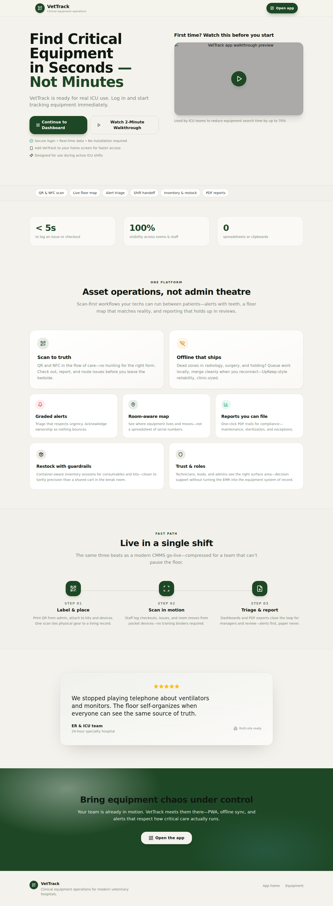
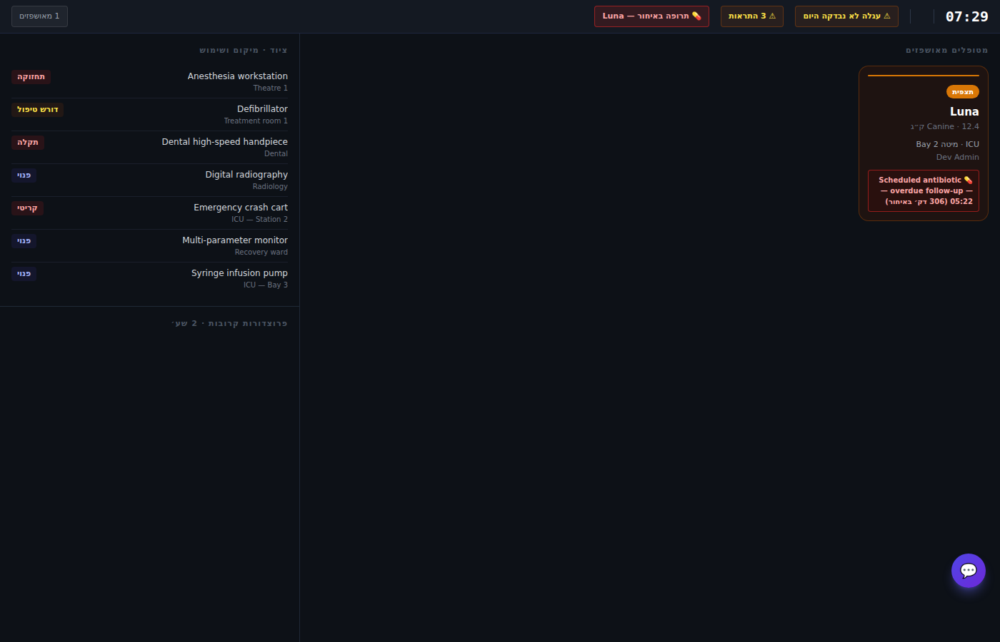
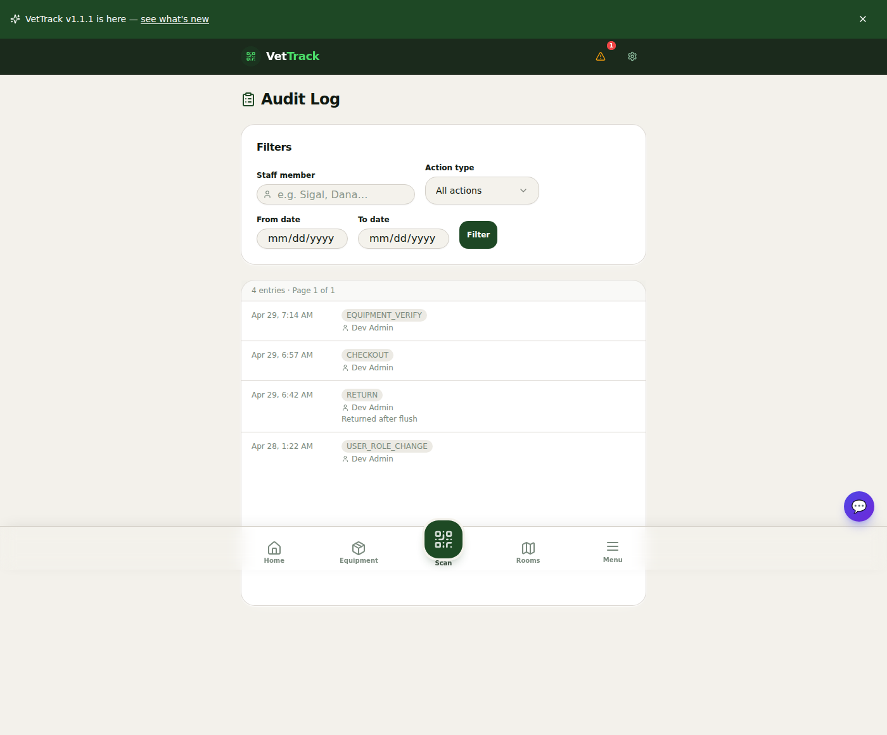
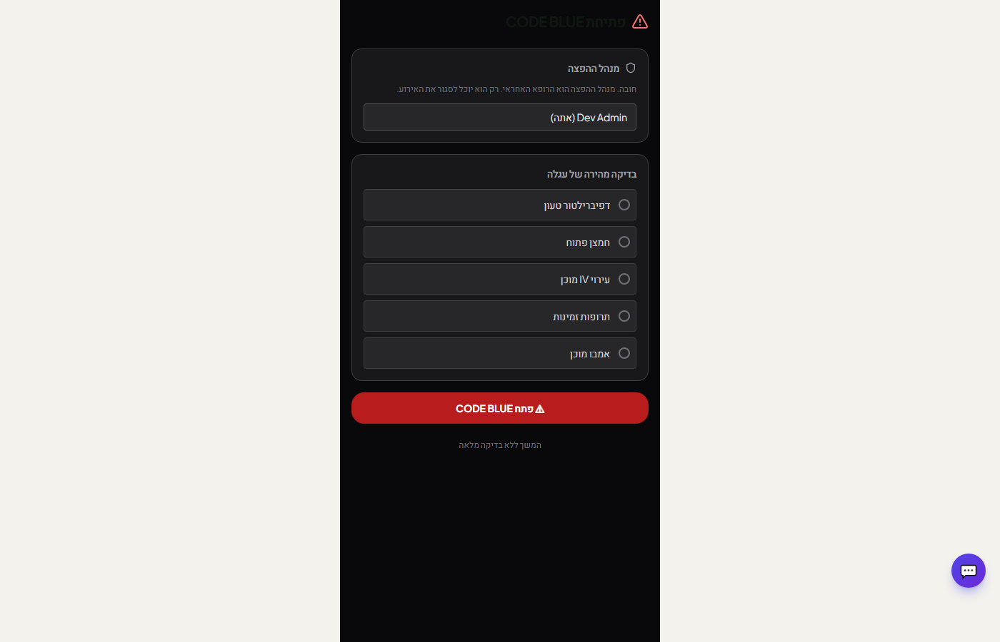
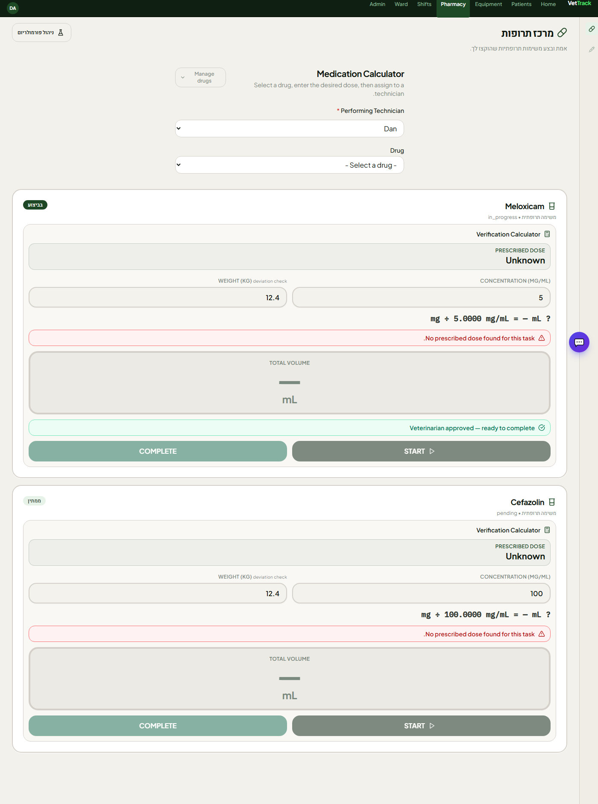
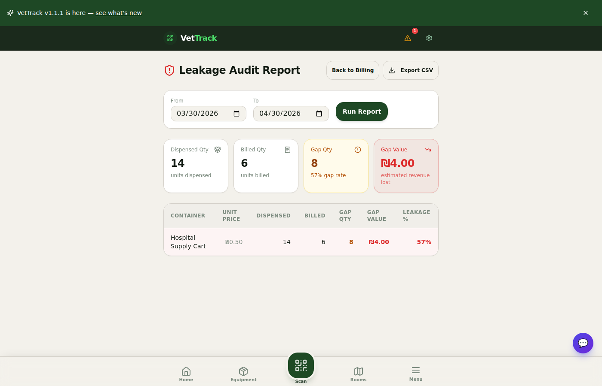
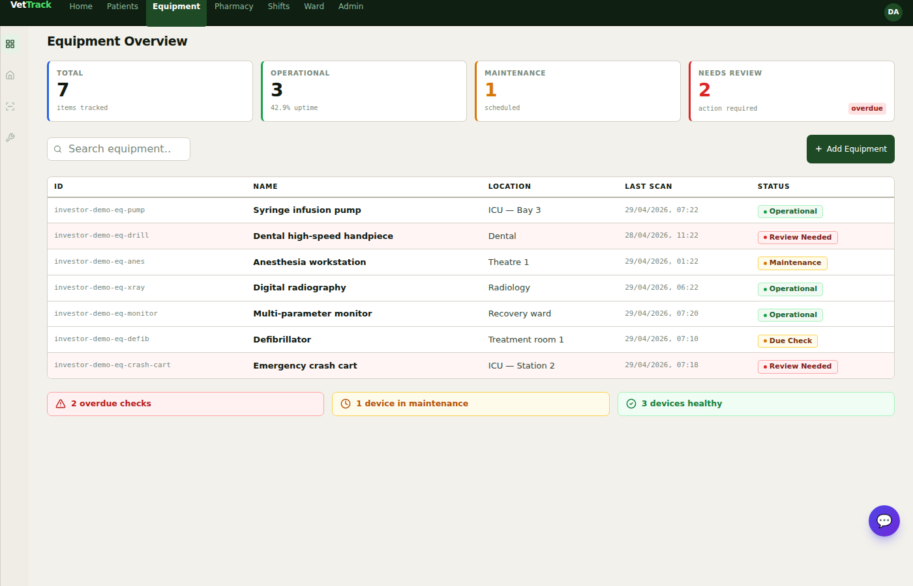

Enterprise SaaS · רב־בית־חולי
נראות ברמת מחלקה, ניהול חירום, תרופות, שלמות מלאי וחיוב, ונכסים ניתנים למעקב — offline-first, מוכן לאינטגרציה, ליישוב לצד או מעל מערכות הניהול הקיימות במרפאה.
ווטרינריה היום · תפעול ברמת בית חולה

למה עכשיו
במילים פשוטות: היום לעיתים רצף כלים שבכל אחד רק חלק מהאמת. המטרה היא מערכת תפעולית אחת מהימנה — מקום אחד שבו מה שקרה בטיפול, בכספים ובביקורת מתיישב וניתן להגנה אחר כך.
בידול
server/integrations/) מאפשר לפעול כ־
שכבת ערך מעל מה שכבר נרכש — סנכרון היכן שצריך, ובעלות על זרימות שלא נבנו ב־PIMS.
הקשר שוק (דוגמאות, לא ממצה): IDEXX (Cornerstone, Neo, ezyVet), Covetrus (Pulse, AVImark), Provet Cloud, Shepherd, Digitail, Vetspire, NaVetor, DaySmart Vet; לתנועות חירום/התמחות — לדוגמה Instinct. VetTrack מתחרה על תיאום בית־חולי, לא בהכרח על החלפת מסמך הריפוד ביום הראשון.
רקע מורחב: docs/investor-deck/COMPETITIVE_LANDSCAPE.md
תזה
עמודי תווך
משטח דגל

ממשל
זווית משקיע: תפעול ניתן להגנה הוא חפיץ באנטרפרייז בריאות — מבלי ביקורת עמוקה מאבדים עסקאות.

עומק מוצר

עומק מוצר

עומק מוצר

עומק מוצר

אמינות הנדסית
מסחרי
סיבוב השקעה
גודל סיבוב · מבנה · שותף מוביל
שימוש בכספים — עומק מוצר, שיווק, אמינות, מוכנות רגולציה
יצירת קשר — vettrack.uk